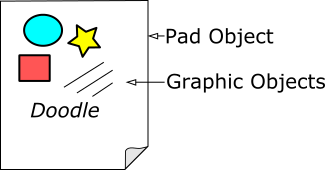
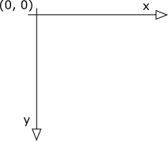

In DoodlePad a Pad object encapsulates the graphic window on which zero or more graphics objects may be drawn. In fact, a Pad is a kind of container that holds graphic objects. Graphic objects may be created and added to a Pad. (See diagram below). You may create more than one Pad object in a single DoodlePad program, but at least one Pad is required.
An interesting feature of DoodlePad is that if you do not explicitly create a Pad object, one will be created for you. This is a good example of DoodlePad's core design philosophy, which is to automatically provide missing components and default parameters as necessary so that your program runs successfully right off the bat :-). As we demonstrated in Getting Started, it is only necessary that you create an instance of a graphic object; DoodlePad will create a default Pad for you automatically and add your object to the Pad.
Of course, you may create one or more Pad objects yourself and add graphic objects to them selectively. In fact, this may be necessary in order to achieve the goals of your particular program. You may also create graphic objects that are not automatically placed in a Pad container. This is accomplished using the appropriate graphic object constructor and specifying a null pad. At a later time your graphic objects may be added to or removed from Pads using standard methods.
Many of the examples that follow will illustrate how to create one or more Pad objects manually, and how to add and/or remove graphic objects from a Pad.
By default, distances on a Pad are measured in pixels. While x-coordinate values increase from left to right, y-coordinate values increase from top to bottom. As a result, the origin (0,0) in located in the upper left corner of the Pad window. The coordinate system of a Pad window and each individual graphic object may be modified using affine transformations. This technique is discussed in more detail later.